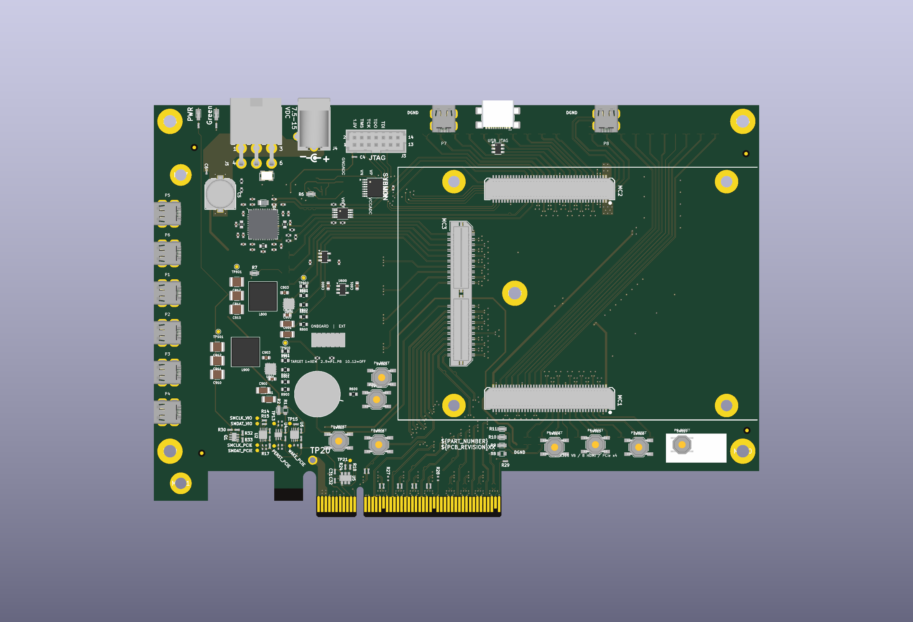

BRK8310-derived carrier · AU25P
XEM8310
carrier.
Eight recording links. PCIe ×4 to the PC. Power and selectable JTAG for every headstage.
V7 schematic · V8 rough placement
- 8
- micro-HDMI ports
- 6
- copper layers
- 422
- electrical components

Stimulation commands travel back over regular Bank64 differential I/O. Two four-port power banks and a nine-target JTAG selector serve the XEM and all eight headstages.
01 / Circuit
One page. Every connection.
The V7 electrical design, paired with the V8 PCB. Choose a circuit or zoom into the full drawing.
Loading the native schematic…
02 / Placement
Inspect the carrier.
Six ports on the left, two on the top. The original BRK outline and mating connectors stay in place.

Loading interactive 3D…
Power. Both four-port power banks are on the front, outside the XEM footprint. Eight protected branches have individual reset controls.
JTAG. Onboard USB programming with nine selectable targets: XEM plus P1–P8. Positions 10–12 are off.
BRK continuity. 91 original footprint positions and 5,735 copper objects are retained. 24 obsolete PCIe segments are removed for electrical ×4 isolation; the ×8 mechanical edge remains.
03 / Components
Find any part.
Search a reference, value or part number. Select a row to locate it in the circuit or on the board.
| Reference | Value / part | Circuit |
|---|
No matching parts. Try a reference such as J101 or U800.
04 / Review files
Take a closer look.
Review status and source information
Placement checkpoint, 25 October 2026. The saved schematic and PCB match. No new tracks, vias or zone refill were added. There are 879 native unconnected connections; physical DRC is not clean.
Unused BRK stubs and historical filled copper still need cleanup. The independent scan protects 2,712 active source copper objects; 483 contacts with unused stubs remain deferred and can still bridge pads. Routing, return paths, stack/impedance, assembly fit, power/thermal behavior and powered operation remain open.
The interactive model uses native board geometry and independently authored nominal component bodies. The rendered views show the original saved CAD appearance. Neither view qualifies assembled clearances. Remote headstage stimulation-GPIO adaptation remains a separate project change.
Based on Opal Kelly BRK8310 A01. Manufacturer references remain on the schematic and in each component’s datasheet field.
Native source manifest · 3D model provenance · Component data · Saved-file review status